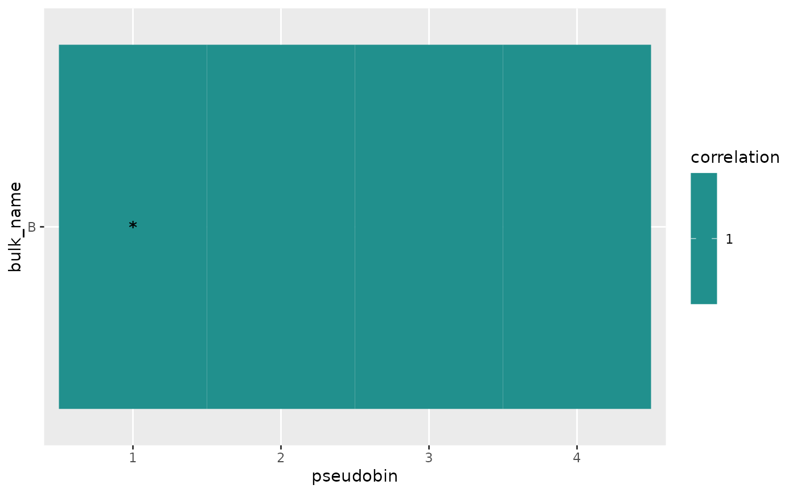
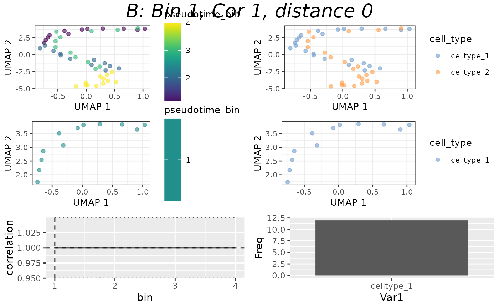
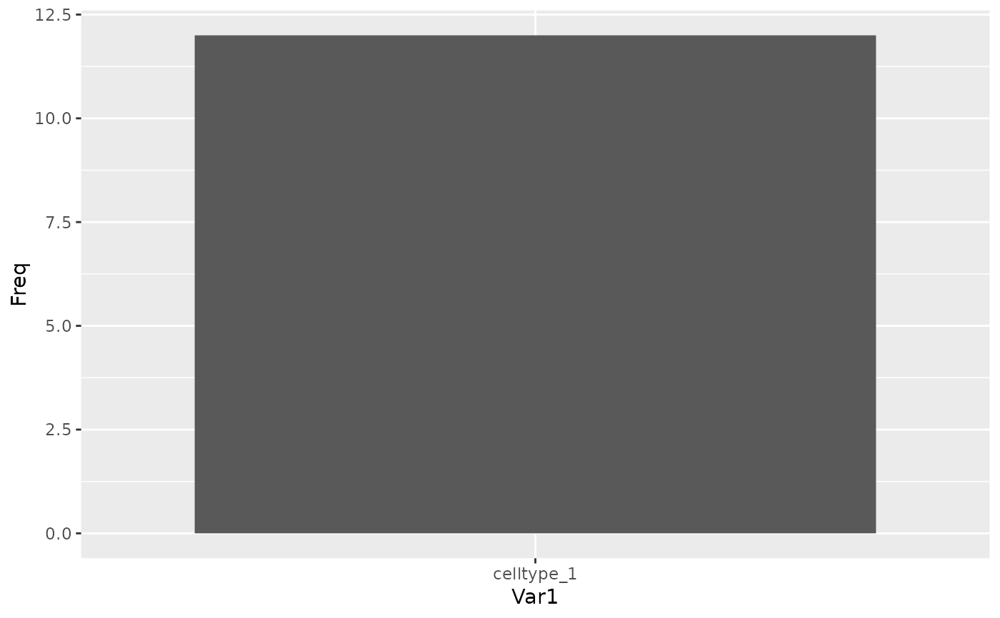

Plot a mapping result's correlation
plot_mapping_result_corr.RdPlots the mapping results correlations with each pseudotime bin
Arguments
- mapping_result
A MappingResult object to plot the correlations for.
Examples
counts_matrix <- matrix(
c(seq_len(120) / 10, seq_len(120) / 5),
ncol = 48, nrow = 5
)
sce <- SingleCellExperiment::SingleCellExperiment(assays = list(
normcounts = counts_matrix, logcounts = log(counts_matrix)
))
colnames(sce) <- seq_len(48)
rownames(sce) <- as.character(seq_len(5))
sce$cell_type <- c(rep("celltype_1", 24), rep("celltype_2", 24))
sce$pseudotime <- seq_len(48) - 1
blase_data <- as.BlaseData(sce, pseudotime_slot = "pseudotime", n_bins = 4)
genes(blase_data) <- as.character(seq_len(5))
bulk_counts <- matrix(seq_len(15) * 10, ncol = 3, nrow = 5)
colnames(bulk_counts) <- c("A", "B", "C")
rownames(bulk_counts) <- as.character(seq_len(5))
# Map to bin
result <- map_best_bin(blase_data, "B", bulk_counts)
result
#> MappingResult for 'B': best_bin=1 correlation=1 top_2_distance=0
#> Confident Result: FALSE (next max upper 1 )
#> with history for scores against 4 bins
#> Bootstrapped with 200 iterations
# Map all bulks to bin
results <- map_all_best_bins(blase_data, bulk_counts)
# Plot Heatmap
plot_mapping_result_heatmap(list(result))

# Plot Correlation
plot_mapping_result_corr(result)

# Plot populations
sce <- assign_pseudotime_bins(
sce,
pseudotime_slot = "pseudotime", n_bins = 4
)
plot_bin_population(sce, best_bin(result), group_by_slot = "cell_type")

# Getters
bulk_name(result)
#> [1] "B"
best_bin(result)
#> [1] 1
best_correlation(result)
#> [1] 1
top_2_distance(result)
#> [1] 0
confident_mapping(result)
#> [1] FALSE
mapping_history(result)
#> bin correlation lower_bound upper_bound
#> 1 1 1 1 1
#> 2 2 1 1 1
#> 3 3 1 1 1
#> 4 4 1 1 1
bootstrap_iterations(result)
#> [1] 200